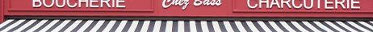
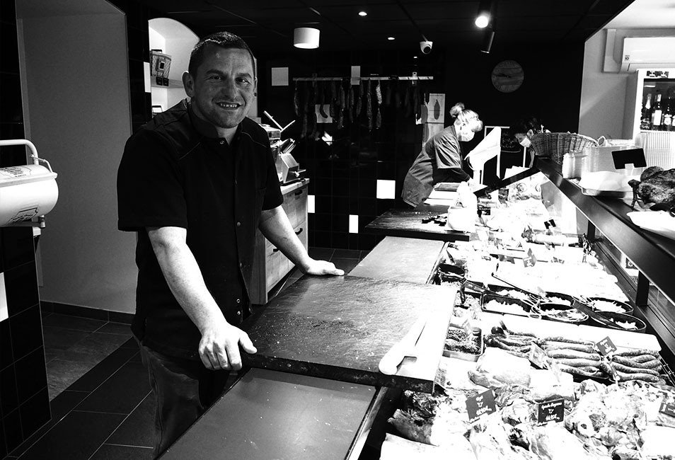
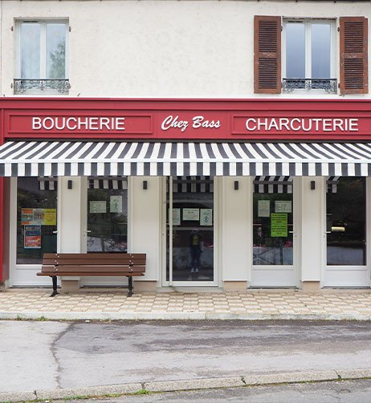
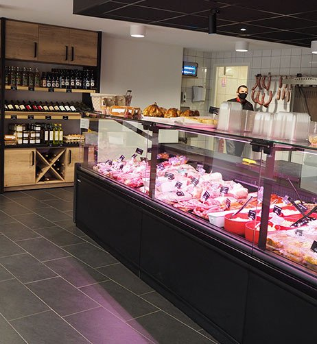

Sébastien Mairet, artisan boucher à Aumont depuis 2011. Des viandes sélectionnées chez les éleveurs jurassiens, une charcuterie faite maison.
Nous rendre visite
Chez Bass, c'est une boucherie-charcuterie artisanale installée au coeur d'Aumont, dans le Jura, depuis 2011. Sébastien Mairet perpétue un savoir-faire traditionnel : sélection rigoureuse des viandes auprès d'éleveurs locaux, découpe soignée, charcuterie faite maison.
Nos viandes proviennent principalement de génisses Charolaises élevées par des agriculteurs du Jura. De la boucherie au comptoir traiteur, chaque produit est préparé avec exigence dans nos ateliers.
Viandes fraîches, charcuterie artisanale et service traiteur pour toutes vos occasions
Boeuf Charolais, veau, porc, agneau, volailles fermières. Des viandes sélectionnées chez les éleveurs jurassiens, découpées et préparées sur place.
Saucissons, terrines, pâtés, jambons, saucisses. Toute notre charcuterie est fabriquée artisanalement dans notre atelier, selon des recettes traditionnelles.
Plats cuisinés maison, plateaux charcuterie, commandes pour vos événements. Des préparations généreuses pour vos repas de famille et réceptions.
Vins du Jura, fromages (Comté, Morbier, Cancoillotte), condiments et spécialités locales. Un complément idéal pour vos repas.
Pièces du boucher sur commande, rôtis préparés, brochettes, colis de viande. Commandez à l'avance pour vos barbecues et fêtes.
Retrouvez-nous à Aumont et à Mont-sous-Vaudrey. Deux points de vente pour être au plus près de nos clients dans le Jura.
Un espace moderne et accueillant pour découvrir nos produits


Sébastien Mairet, natif de Mont-sous-Vaudrey, a ouvert Chez Bass à Aumont en 2011. Passionné par son métier, il sélectionne ses viandes directement auprès des éleveurs du Jura, avec une préférence pour les génisses Charolaises élevées en plein air.
Fort du succès de la première boutique, il a ouvert un second point de vente à Mont-sous-Vaudrey, pour répondre à la demande croissante de ses clients fidèles.
Son engagement : proposer des produits de qualité, préparés artisanalement, dans le respect des traditions bouchères.
Passez nous voir en boutique ou contactez-nous pour vos commandes.
10 B Route de Genève
39800 Aumont